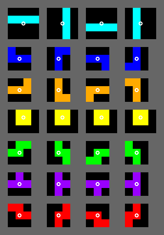

Homework 8 (Extra Credit)
Last updated: Thu, 3 Apr 2025 17:13:22 -0400
Out: Tue Apr 01 2025, 11am EST
Due: Tue Apr 08 2025, 11am EST
Overview
Note that skipping this assignment will not hurt your grade.
Option 1: Continue Working on Homework 7
If you choose this option, use this week as an extension for Homework 7. No late days will be charged.
Use the repository for Homework 7 for the code and submit using Homework 7’s GradeScope submission page.
Option 2: Fix a Previous Assignment
If you choose this option, you must select a previous assignment and build off the codebase for that assignment (using that assignment’s existing repository). Your submission will be graded based on the previous criteria for that assignment, as well as how well it explains the changes to the existing codebase. (So for this option, do not create a new repository, do not start from scratch, and obviously do not submit code that you did not write).
To help graders understand what has changed, each submission must be accompanied by a cover letter (in the README file) describing what has been fixed or changed. The clarity of writing in this letter will factor into the grade (hint: more words is not better). (A recent study found that the top skill that software developer recruiters are looking for is the ability to communicate effectively in writing. So consider this a great opportunity to hone your skills.)
clear GitHub commit diffs and clarity of commit messages (see How to Write a Git Commit Message if you are unsure how to write a commit message)
clarity and content of cover letter
correctness of code
design recipe
tests
style
The grade you earn will replace the grade for the chosen previous assignment.
Submitting
When you are done, submit your work to Gradescope hw8. You must use the "GitHub" Submission Method and select your hw<X>-<LASTNAME>-<FIRSTNAME> repository.
Note that this is the only acceptable way to submit homework in this course. (Do not manually upload files and do not email files to the course staff. Homework submitted via any unapproved methods will not be graded.)

Option 3: Complete the Tetris Game
The last option is to complete the Tetris game (or parts of it). Fortunately, we have already implemented most of the functionality in previous assignments! So the remaining work mostly involves putting together all the existing components.
There are, however, a few remaining unimplemented behaviors that must be added. We leave it up to each student to determine the design and implementation of these behaviors. Since we more than halfway through the semester, each student should be comfortable using the entire The Design Recipe from scratch so we do not give specific Data Definitions to use.
But to give some guidance, here is a sketch of what has not been completed yet (along with their extra point values):
- Block movement:
As in Homework 3, a Block should naturally fall at one UNIT per "tick" (where a UNIT is 40 pixels). It should also be able to move left, right, and down when the appropriate key is pressed.
A Block should not be able to move out of the scene when against the left, right, and bottom walls.
(5 points) The remaining behavior to implement is to ensure that Block movement should not occur if it would overlap with another (locked) block. The overlap? function from Homework 7 should be useful here.
- Block rotation:
As in Homework 4, the "up" key should rotate the active block 90 degrees clockwise, according to the RotationStates of each block.
Blocks should continue to push away from the (left, right, and bottom) walls when rotating, as described in Homework 4, if needed.
(5 points) The remaining behavior to implement is that a Block should not push away from other blocks when rotated. Instead, if a rotated Block would overlap with other (locked) blocks, then the rotation should not happen. Again, the overlap? function from Homework 7 already implements this check so there should not be too much work left to be done.
- Overall GamePlay:
The gameplay scene is 400 pixels wide and 800 pixels high.
Blocks should start just out of view above the scene and (at least part of) the block should appear at the top of the scene after 1 tick.
"Even"-width Blocks (e.g., an I-Block) should start in the middle of the scene horizontally, while "odd"-width Blocks (e.g., a J-Block) should start slightly offset to the left (i.e., 3 UNITs away from the left wall.)
As in Homework 5, a Block should "lock" when it is already at the bottom of the scene and a tick occurs.
When a Block locks, a random new block should appear at the top, in its initial position.
As in Homework 6, when "locked" Blocks create a "full line", that line should be removed from the game.
Scoring (5 points): The game should keep track of how many full lines have been eliminated and display a count to the user.
Finally, as in Homework 5, when "locked" Blocks pile up to touch the top of edge of the scene, the game should end and an appropriate message should be displayed.
Block types: Four more Block types need to be added to the game (3 points each). Each block should follow all the above behavior.
Here are images of rotation states and rotation points for all the blocks:

The last four need to be added. In order, their names and colors are:the "O" block, yellow in color
the "S" block is green
the "T" block is purple
the "Z" block is red
Maximum points: 5 + 5 + 5 + 3 + 3 + 3 + 3 = 27 points
Put your code in hw8.rkt, tests in tests.rkt, and other info in README.md as usual.
All code should of course follow the design recipe and style guidelines that we have been using this semester.
This option will be graded by correctness of the above functionality as well as the readability of the submitted code.
Submitting
When you are done, submit your work to Gradescope hw8. You must use the "GitHub" Submission Method and select your hw<X>-<LASTNAME>-<FIRSTNAME> repository.
Note that this is the only acceptable way to submit homework in this course. (Do not manually upload files and do not email files to the course staff. Homework submitted via any unapproved methods will not be graded.)